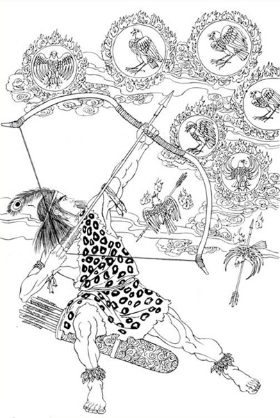

一，觀世音菩薩.......由来
聖觀音長相極美，但冷面藏情，從來不笑的，實際心很善良，是最風流，計謀却是高出一籌。
老大妙善即是觀世音菩薩居普陀宮又稱西洋聖母，能量是十一級。又爲何稱之爲千光眼、千光佛。又稱之爲千手千眼？千光眼 ，是指其能透過天光，同時觀上千個時空區。而且眼到手到 ，神通廣大。故曰千手觀音。
盤古大帝開闢A點物質生存區之後，因喪失能量而沉入C點。在成中劫期，大外孫女妙善率大量生命靈光進入A點繼承祖業。在地球上建立了極樂園，國號大羅金仙國 ，定國都于地球最高點西藏高原。
但地球淨土最麻煩的一件事就是，若想獲人身，必行投胎之路 ，但一投胎，能量就喪失，而無法從漏點返回。另一弊端是 ，地球的時間速度極快，轉眼就是萬千年，生生死死息息不止 ，永遠處於這種變化無常之中，不如漏點那邊那樣寧靜、有常 、如如不動。 妙善為大羅金仙王，深感不安。有心將地球上的衆大羅仙女全部渡回漏 點，但苦於能量喪失而不能重返。於是，召漏點那邊的一個總想進入A點的巨靈，進入A點住胎。
此巨靈住胎後，爲大羅金仙國王太子，名叫羅地干布。他高興地接了王位，率衆大羅仙女在地球上開山辟洞 ，沿海底下把幾塊陸地全通連起來。而大羅仙王則出家修行 ，煉足能量之後返回漏點之內。
大羅仙王涅槃之前，傳羅地干布“一卷經”，要他率眾大羅仙女按此法 修行，以返故里。但羅地干布覺得這裏自在好玩，有山有水 ，真山真景，比那漏點內的虛無飄渺強萬倍。故而也不煉功 ，也不傳功，只把一卷經扔到九霄雲外。 妙善回天之後，努力在B點另辟一個極樂世界，準備接迎A點的眾生。但無論是如何感召，羅地干布只是不理不睬 ，只顧與衆羅仙游山玩水。
妙善眼看一批批大羅仙女因轉世不止，造業不斷，能量日趨衰減 ，一批批地墜入C點。于是赴天後宮上奏大光明王佛。佛下令將那該死的羅地干布及衆大 羅仙全部渡回。于是十妙女夜闖斷魂關（漏點），進入了A點。
地球上的大羅仙衆，忽見夜空之上出現十個大日，地球上的有形生命體 紛紛開始死亡。急呼王太子羅地干布，于是太子布大羅陣與之對抗 。太子名為左臂神弓，左手淩雲虹光劍，其一度威震生命天河 。他就是原清都山水郎玄龍大帝，進入A點後，死不回天，落個人間自在王。

十個大日被他擊落九個，餘下一個妙文潜回斷魂關。落魄的九日只好住 胎爲狐、鳥、魚、蛇，又幾經周折轉世，苦苦修行，終于有成 ，涅槃後返回斷魂關。從此，天上下令將下界的大羅金仙國改國號為大 羅刹帝國。羅地干布爲羅刹王太子，衆大羅仙女從此被叫為大羅刹女 。而妙善却背了個黑鍋，被人叫做大羅刹王。
此後，妙善拜托釋迦牟尼佛，釋佛足智多謀，曰：對迷癡的眾生 ，只可善勸，不可强渡。
羅地干布要保護地球上的生靈，公然對抗十大菩薩（原始的十個大日如來） ，用神力、神弓，射墮九日。觀音下墮後，轉世爲紅狐 ，又轉世爲西洋聖母，嫁與羅地干布（即玄龍大帝），控制了羅地干布，又借佛兵滅了大羅刹帝國，將之一分爲四。一塊即西藏、新疆 ，一塊即印度半島，一塊歸西洋，一塊即波斯、埃及。
當年觀音一世投胎爲三公主，出家爲尼法名妙善，妙善發誓要尋雪山青 蓮，因為天示妙善，得此青蓮則開慧。妙善尋青蓮至古青潭 ，見古六字塔上的六字大明咒，修蓮花開，秋月來。獲大光明而出牢關。又在古青潭隱修，伺機沖出斷魂關。
觀音轉世出家爲妙善時，曾遠涉青潭北邊的玉龍雪山尋求青蓮 。妙善在青潭觀月修得色空等同觀。
雪山青蓮終于讓大女兒聖觀音給尋到了。姐妹九個把青蓮護送回大日宮 。沒有辜負老輩的苦心。但以後發現，青蓮一取回，下面漸漸就不行了 。下面的一個個都現了形，紛紛落地，又快速死亡下墜。於是 ，大日宮將青蓮的八瓣蓮舟交與八個姐，將蓮心交與九妹 ，令她們下界，火速渡回羅地干布的部族。那時的天下全是羅地干布的 部族。
妙善傳給玄龍“一卷經”，此經是天上天下一切法，一切經之總持 ，即“般若波羅密多心經”。一切修行者，若想過斷魂關 ，不可不閱此一卷經！
在九宮中有一位特殊身份的娘娘，其身世極爲複雜，世人無法分辨出她 的來歷，以及她到底是誰，因爲她時而男身，時而女身，變化莫測 ，有時甚至讓人張口結舌、目瞪口呆，她就是史前勢力最大的大羅刹帝國之 君，大羅刹王。
在伊斯蘭教裏稱他爲真主，在佛教裏稱他爲正法明如來佛 。他又是第三代玉皇之父，以後爲了渡化玄龍，他又轉世爲西洋聖母 ，成爲九宮娘娘，此位娘娘就是觀世音菩薩，她與玄龍有一子就是基督 。
觀音菩薩多次轉世下界渡人，最著名的一次是轉世為西洋聖母 ，並嫁于玄龍大帝爲妻，而成爲九宮娘娘之一，爲的就是消滅東西方之爭，渡化東方戰神玄龍。而釋迦牟尼佛又是玄龍之師 ，故而宗門之說確實是無必要再談。
天公的姐姐紫光夫人下嫁大羅刹帝國爲東 方第一 夫人 ，其與大羅刹王有一子名羅地干布，羅地干布繼承王位，大羅刹王升華了，轉世爲西洋聖母。
觀音成佛之前第一個來到地球，建立了大羅刹帝國，造了業 ，以後生下羅地干布，即刻就寂滅了，又轉世爲西洋聖母，以後修成了佛位 ，故而發大願，要度盡娑婆世界的衆生方稱佛號，這是因爲娑婆世界造 業出來種種衆生是觀音開的頭，頭一開就收不住了，你來造業 ，我也來造業，都玩的很開心，造出這許多生靈、物種。
故而觀音發大願要渡盡天上天下、地上地下的衆生回歸宙心 ，又因人因地設教，請釋迦創立佛教，三清創道教，另設伊斯蘭教 、天主基督教等等。各門教主只教不渡，只有總壇主觀音才行渡事。
令世人不解的是，號稱觀音後代的西藏人，在修藏密時 ，也在頭部劃十字，這是因為觀音的另一個稱號是西洋聖母的緣故。
《薄伽梵歌》是出自九天玄女之手，《心經》是出自聖觀音之手。而 《易》則不同。《易》是大日宮及九宮十姐妹共同之作 ，但最後由年齡最小的九宮、九天玄女負責集結成卦。
故知，《易》乃通靈。通日月，通天地，通萬法萬物萬有。通大日宮 ，通九宮。 記得師有一次問西王聖母焚何香好。聖母曰，印度香雖好 ，但九級能量以下者承受不了。九級能量以下者，焚一般雜香就可以了。聖母說，印度香是供聖觀音的。小神小仙用不起。
唐三藏西天取經，取的就是《大般若經》。回程經大理的“點蒼山” ，遭點蒼山羅刹女襲擊，幾乎把經全部毀掉。點蒼山一陣大雨 ，經書全被淋透。唐三藏辛苦多年，長途跋涉，眼看毀於一旦 ，于是祈念大勢至和聖觀音。大勢至趕跑了羅刹王，聖觀音降住了衆羅 刹女，止住了點蒼大雨，保住了《大般若經》。直至今日 ，在大理點蒼仍有“曬經坡”。白族人決不足踏此地 ，以表此坡之神聖。至今，白族人仍盛傳“觀音降羅刹”的故事。
S：嗯，嗯。……聖觀音……瑪麗亞娜。瑪麗亞娜就是西方天主教的，她們稱之為聖母瑪麗亞娜 。她們天語叫瑪麗亞娜。
過去佛門裏面說的那個清淨大海，這個清淨大海裏邊的衆菩薩 ，主要是指九宮。而九宮裏面的爲首主要就是指聖觀音 。所以清淨大海的這個眾菩薩，實際就是，主要就是聖觀音為首 。只要聖觀音一到那個大日宮的話，就是待如上賓呢。
幾乎全球都有聖觀音的後代，這也就是聖觀音之所以稱之爲大慈大悲的 原因，因為那是一種聖母之愛。
觀音以後又轉世爲人，小名叫妙善，並以妙善的生日定爲觀音生日 ，以妙善出家爲尼的日子， 二月十九日 爲觀音出家日，以妙善成道日 ， 六月十九日 訂爲觀音成道日，這僅僅是人類思念觀音的一種依托。 西洋女王是佛王的二姐，佛王的大姐就是觀世音。觀世音在西洋，被稱之為西洋聖母。在中東被稱之為真主。在中國西藏 ，被稱之為西藏人的祖先。
有人說，我信天主教、基督教怎麼辦？天主教供的是西洋聖母 ，而她就是觀音的化身。觀音是玄女的大姐，又有何不能相應呢 ？天上原本是一家，只是世人蒙在鼓裏，分成你家我家 。宇宙的家就一個，即生命之源宙心。 稱之為無緣大悲寶庫觀世音。
| 下 一 頁 | 回 主 頁 |